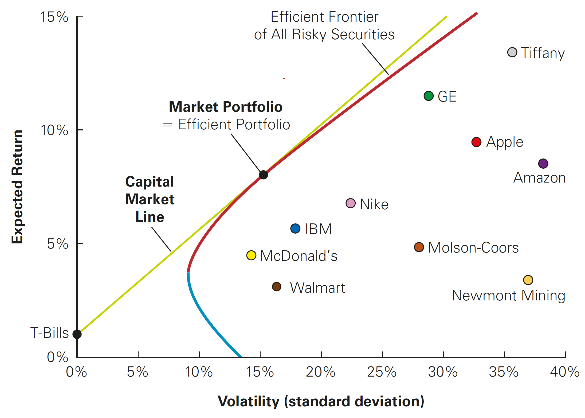
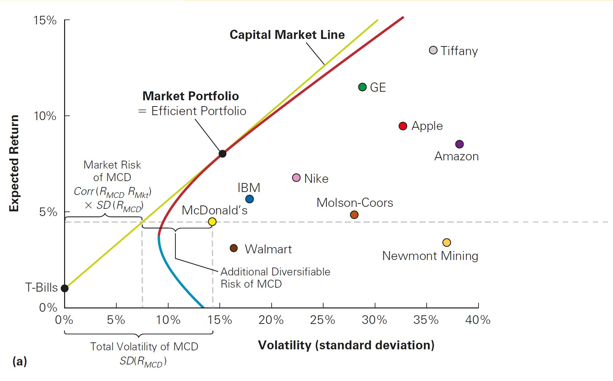
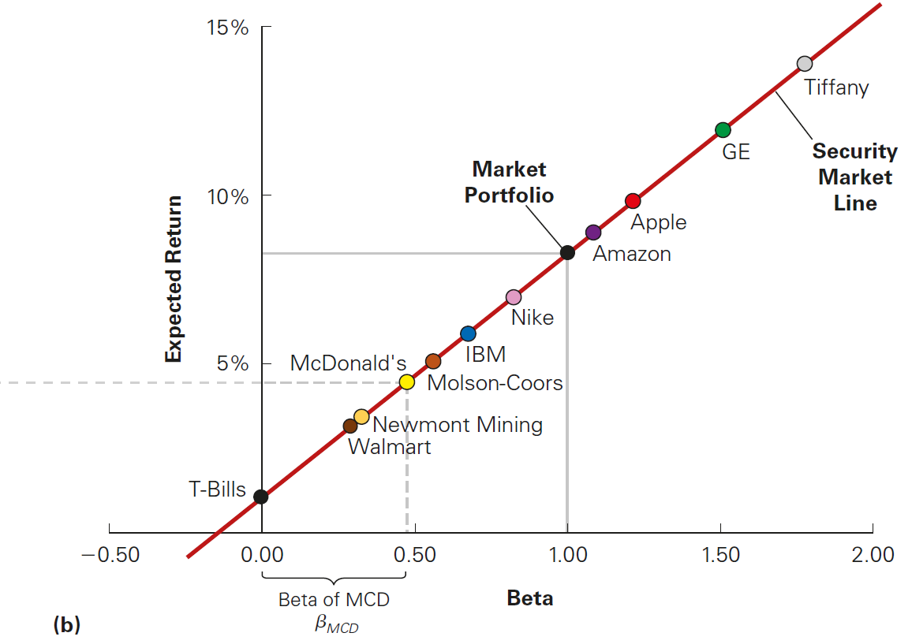
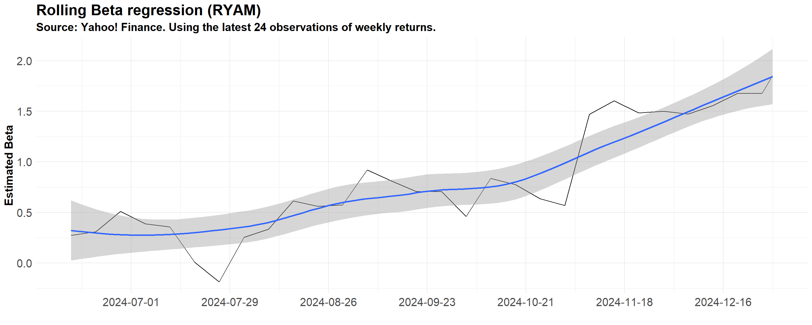
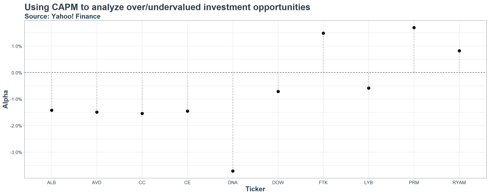

The Capital Asset Pricing Model (CAPM) in practice
Outline
- This lecture is mainly based the following textbooks:
- Tidy Finance (Scheuch, Voigt, and Weiss 2023)
- R for Data Science (Wickham, Mine Cetinkaya-Rundel, and Grolemund 2023)
Coding Replications
For coding replications, whenever applicable, please follow this page or hover on the specific slides with containing coding chunks.
- Ensure that you have your session properly set-up according to the instructions outlined in the course webpage
- In the webpage, you can also find a detailed discussion of the examples covered in this lecture
Disclaimer
Disclaimer
The information presented in this lecture is for educational and informational purposes only and should not be construed as investment advice. Nothing discussed constitutes a recommendation to buy, sell, or hold any financial instrument or security. Investment decisions should be made based on individual research and consultation with a qualified financial professional. The presenter assumes no responsibility for any financial decisions made based on this content.
All code used in this lecture is publicly available and is also shared on my GitHub page. Participants are encouraged to review, modify, and use the code for their own learning and research purposes. However, no guarantees are made regarding the accuracy, completeness, or suitability of the code for any specific application.
For any questions or concerns, please feel free to reach out via email at lucas.macoris@fgv.br
Background
The Capital Asset Pricing Model (CAPM) is a very practical, robust and straightforward implementation for modeling expected returns
It gets managers to think about risk in the correct way: instead of thinking about total risk, the CAPM shows us that we only the market risk (non-diversifiable) should be the concern
- There are three simplifying assumptions around investor behavior that the CAPM establishes:
The Capital Asset Pricing Model (CAPM) Assumptions
Investors can buy and sell all securities at competitive market prices without incurring taxes or transactions costs can borrow and lend at the risk-free interest rate
Investors hold only efficient portfolios of traded securities
Investors have homogeneous expectations regarding the volatilities, correlations, and expected returns of securities
Question: why these assumptions are important?
Pricing the Risk Premium under the CAPM
- Recall that the expected return of any given asset \(i\) is given by:
\[ \small E[R_i] = R_f + \beta_i^P \times (E[R_p] - R_f) \]
- How can we find \(\beta_i^P\), the sensitivity of asset \(i\) returns to the efficient portfolio, \(P\)?
- To identify the efficient portfolio (Markowitz 1952), we need to know the expected returns, volatilities, and correlations between all available investments!
- However, if the CAPM assumptions are valid, we can now identify the efficient portfolio: it is equal to the market portfolio!
- What does that mean for us in terms of determining expected equity returns? Until now, we were agnostic on what \(P\) was. Under the CAPM, we can change the subscript \(P\) to \(M\):
\[ \small E[R_i] = R_f + \beta_i^M \times (E[R_m] - R_f) \]
CAPM Implication 1: the Capital Market Line (CML)

The CML shows no clear relationship between risk and return…

CAPM Implication 2: the Security Market Line (SML) makes the relationship clear when focusing only (\(\beta^M_i\))!

Hands-On Exercise
- You work as a buy-side analyst at Pierpoint Capital, focusing on the chemicals industry. You job is replicate the CAPM for a handful of securities from the Chemical (basic) industry and provide insights for the fund manager:
- Which stocks, according to the CAPM, are undervalued and why?
- Which stocks, according to the CAPM, are overvalued and why?
- If the fund were to implement your strategy, what are the risks associated with?
Specific Instructions
The securities to be included in the analysis are: Dow (ticker: DOW), LyondellBasell (LYB), Perimeter (PRM), Flotek (FTK), Rayonier (RYAM), Albemarle (ALB), Celanese (CE),The Chemours (CC), Ginkgo Bioworks (DNA), and American Vanguard (AVD).
CAPM estimation should be done at a weekly level using data from 2024
Estimating the Equity Cost of Capital in practice
- The dynamics behind the pricing of securities under the CAPM are:
\[R_i = R_f + \beta \times (E[R_m] - R_f)\]
However, no one really told you from where the numbers came from
Recall that, under the CAPM, we need to have estimates related to the market portfolio:
- It is is equal to the risk-free interest rate, \(R_f\)…
- The expected return on the market portfolio, \(E[R_m]\)…
- And a stock’s s sensitivity to the market portfolio, denoted by \(\beta\)
Cost of Equity Components: the risk-free rate
The first ingredient of CAPM is risk-free rate, which is the interest rate that investors can earn while having zero to limited volatility
Suggestions on how to pick the Risk-Free (\(R_f\)) rate to be used:
- The yield on U.S. Treasury securities
- Surveys suggest most practitioners use 10- to 30-year treasuries
- Highest quality assets
Often, we use a short-term risk-free rate to evaluate a short-term investment, and a long-term rate when evaluating a long-term investment
Country-specific risk-free rates
Whenever modeling assets outside of the U.S, we can either use the yields for local treasuries (i.e, relatively safer assets) or use U.S treasuries by adjusting the calculations for country-specific risk premium - see, for example, Brazilian’s EMBI.
Cost of Equity Components: the market risk premium
Another component of the Cost of Equity is the difference between \(E[R_m]\) and \(R_f\) (the market risk premium)
Ways to estimate the market risk premium:
- Estimate the risk premium (\(E[R_m] − R_f\)) using the historical average excess return of the market over the risk-free interest rate
- Notice that, even with long periods, we often have large standard errors
- Implicitly, you are assuming that the past is a good proxy for the future
Watch-out!
Indexes like the S&P500 and Ibovespa are not considered the market portfolio, but rather, they are proxies for the market portfolios - in other words, they are reasonable approximations of the market portfolio for a given set universe of securities
Step 1: Collecting Data
As a suggestion, we will be collecting data on U.S. Treasury yields and Market Risk Premium using Kenneth French’s website, which hosts a data library with updated on U.S. returns from a wide varieaty of risk factors and asset classes
- Treasury yields (\(R_F\)) are defined as the daily returns on the 1-month Treasury Bill
- Market Returns (\(R_M\)) are defined as the value-weighted returns on a bundle of U.S. stocks 1
I have already worked on the data for you, and you can download it using the Download button - details on the code used to manipulate the data and put it into tidy format are presented in the next slide
To load the data in your session, call:
Step 1: \(R_M\), \(R_F\), and the Market Risk Premium
# Use Fama-French Data to retrieve Rf and MRP
FF_url <- "https://mba.tuck.dartmouth.edu/pages/faculty/ken.french/ftp/F-F_Research_Data_5_Factors_2x3_daily_CSV.zip"
temp_file <- tempfile()
download.file(FF_url, temp_file)
#Download and manipulate the data
unzip(temp_file)%>%
read.csv(skip=3)%>%
#Select only the data, Excess Returns, and Risk-Free Columns
select(1,2,7)%>%
#Change the names of the variables
setNames(c('Date','MRP','Rf'))%>%
#Make sure the date columns is read as a Date object
mutate(Date=as.Date(strptime(Date,format='%Y%m%d')))%>%
#Filter for 2024
filter(year(Date)==2024)%>%
#Manipulate data to aggregate
mutate(across(where(is.numeric),\(x) (1+x/100)))%>%
#Pivot to get only one column
pivot_longer(names_to = "Key",values_to = "Value",-Date)%>%
#Group by the newly created Key column
group_by(Key)%>%
#Apply nest() for functional programming and perform aggregation
nest()%>%
mutate(data = map(data,as.xts))%>%
mutate(data = map(data,apply.weekly,\(x) prod(x)-1))%>%
mutate(data = map(data,as.data.frame))%>%
mutate(data = map(data,~rownames_to_column(.,'Date')))%>%
unnest(data)%>%
#Pivot back to wide format
pivot_wider(names_from = Key,values_from = Value)%>%
#Write as a csv
saveRDS('MRP_and_RF.rds') Date MRP Rf
1 2024-01-05 -1.880351e-02 0.0008802904
2 2024-01-12 1.630595e-02 0.0011004841
3 2024-01-19 9.912377e-03 0.0008802904
4 2024-01-26 1.043348e-02 0.0011004841
5 2024-02-02 1.185523e-02 0.0010804666
6 2024-02-09 1.484388e-02 0.0010504411
7 2024-02-16 -2.926148e-03 0.0010504411
8 2024-02-23 1.254919e-02 0.0008402646
9 2024-03-01 1.060239e-02 0.0010504411
10 2024-03-08 -3.840512e-03 0.0010504411
11 2024-03-15 -3.377924e-03 0.0010504411
12 2024-03-22 2.306942e-02 0.0010504411
13 2024-03-28 4.564621e-03 0.0008402646
14 2024-04-05 -1.150557e-02 0.0010504411
15 2024-04-12 -1.675444e-02 0.0010504411
16 2024-04-19 -3.211752e-02 0.0010504411
17 2024-04-26 2.707724e-02 0.0010504411
18 2024-05-03 5.745092e-03 0.0010204162
19 2024-05-10 1.656236e-02 0.0010004001
20 2024-05-17 1.543225e-02 0.0010004001
21 2024-05-24 -1.968430e-03 0.0010004001
22 2024-05-31 -6.544949e-03 0.0008002400
23 2024-06-07 9.163612e-03 0.0011004841
24 2024-06-14 1.293156e-02 0.0011004841
25 2024-06-21 5.376481e-03 0.0008802904
26 2024-06-28 8.368114e-05 0.0011004841
27 2024-07-05 1.761172e-02 0.0008402646
28 2024-07-12 1.057404e-02 0.0010504411
29 2024-07-19 -1.923631e-02 0.0010504411
30 2024-07-26 -6.090287e-03 0.0010504411
31 2024-08-02 -2.779540e-02 0.0010704580
32 2024-08-09 -1.139424e-03 0.0011004841
33 2024-08-16 3.955583e-02 0.0011004841
34 2024-08-23 1.501644e-02 0.0011004841
35 2024-08-30 9.239343e-04 0.0011004841
36 2024-09-06 -4.546808e-02 0.0008002400
37 2024-09-13 4.114533e-02 0.0010004001
38 2024-09-20 1.494732e-02 0.0010004001
39 2024-09-27 4.994023e-03 0.0010004001
40 2024-10-04 1.992034e-03 0.0008803095
41 2024-10-11 1.142536e-02 0.0008502890
42 2024-10-18 8.262229e-03 0.0008502890
43 2024-10-25 -1.139132e-02 0.0008502890
44 2024-11-01 -1.142076e-02 0.0008803095
45 2024-11-08 5.133601e-02 0.0010004001
46 2024-11-15 -2.267490e-02 0.0010004001
47 2024-11-22 2.167504e-02 0.0010004001
48 2024-11-29 9.707892e-03 0.0008002400
49 2024-12-06 1.021493e-02 0.0008502890
50 2024-12-13 -9.249021e-03 0.0008502890
51 2024-12-20 -2.273584e-02 0.0008502890
52 2024-12-27 5.566751e-03 0.0006801734
53 2024-12-31 -1.544986e-02 0.0003400289Step 2: collecting stock price information
Now that we have the right-hand side components of your CAPM equation, it is time to collect information on stock prices for the selected stocks. By now, you can pretty much apply the rationale you’ve done in previous lectures:
- Create a vector
assetscontaining the tickers that you wish to request information from - Create a
startandendobjects containing the analysis period - Use
tq_get()and pipeassetsonto the function along withfrom=startandto=endarguments - Manipulate the data to calculate weekly returns, assigning it to an object called
Stock_Data
- Create a vector
Finally, you can use
left_join()to mergeStock_DatawithFF_Data:
Step 2: collecting stock price information
#Create the start and end dates
start=as.Date('2024-01-01')
end=as.Date('2024-12-31')
#Create the list of assets
assets=c('DOW','LYB','PRM','FTK','RYAM',
'ALB','CE','CC','DNA','AVD')
#Collect data, select necessary columns, and calculate weekly returns
Stock_Data=assets%>%
tq_get(from=start,to=end)%>%
select(symbol,date,adjusted)%>%
group_by(symbol)%>%
tq_transmute(select = adjusted,
mutate_fun = weeklyReturn,
col_rename = 'weekly_return')
#Left join when column names are different
Full_Data=Stock_Data%>%left_join(FF_Data,by=c('date'='Date'))# A tibble: 530 × 5
# Groups: symbol [10]
symbol date weekly_return MRP Rf
<chr> <date> <dbl> <dbl> <dbl>
1 DOW 2024-01-05 -0.00922 -0.0188 0.000880
2 DOW 2024-01-12 -0.0265 0.0163 0.00110
3 DOW 2024-01-19 -0.0105 0.00991 0.000880
4 DOW 2024-01-26 0.0237 0.0104 0.00110
5 DOW 2024-02-02 -0.0118 0.0119 0.00108
6 DOW 2024-02-09 0.0107 0.0148 0.00105
7 DOW 2024-02-16 0.0276 -0.00293 0.00105
8 DOW 2024-02-23 0.0164 0.0125 0.000840
9 DOW 2024-03-01 0.00146 0.0106 0.00105
10 DOW 2024-03-08 0.0151 -0.00384 0.00105
# ℹ 520 more rows\(\rightarrow\) You now have the weekly returns for all selected stocks, the weekly risk-free returns, and the weekly market returns!
Cost of Equity Components: \(\beta\) estimation
All that’s left is to estimate the stocks’s sensitivity to the returns of the market portfolio, \(\beta\)
From what we know on the theory on portfolio returns, a new asset \(i\) should be enhance the performance of a portfolio if:
\[ \small \underbrace{\frac{E[R_i] - R_f}{\sigma_{i} \times Corr(R_i,R_m)}}_{\text{Sharpe Ratio of } i} > \underbrace{\frac{E[R_m] - R_f}{\sigma_{m}}}_{\text{Sharpe Ratio of Market}} \]
- With that, we saw that the expected return from an asset \(i\) should be:
\[ \small R_i - R_f = \underbrace{\frac{\sigma_{i} \times Corr(R_i,R_m)}{\sigma_{m}}}_{\beta^M_i} \times (E[R_m] - R_f) \]
Cost of Equity Components: \(\beta\) estimation, continued
- Because \(\small Corr(R_i,R_m)=\frac{Cov(R_i,R_m)}{\sigma_i\sigma_m}\), we have that:
\[ \small (R_i - R_f)=\frac{\sigma_{i} \times Cov(R_i,R_m)}{\sigma_i \sigma_m\sigma_{m}} \times (E[R_p] - R_f)\rightarrow (R_i - R_f)= \underbrace{\frac{Cov(R_i,R_m)}{\sigma^2_m}}_{\text{OLS formula for slope}}\times (E[R_p] - R_f) \]
- We can then estimate \(\beta\) using an Ordinary Least Squares regression:
\[ \small \underbrace{(R_i - R_f)}_{\text{Excess Return}} = \underbrace{\alpha_i}_{\text{Uncorrelated Return}} + \underbrace{\beta_i}_{\text{Stock's Market Sensitivity}} \times \underbrace{(R_m - R_f)}_{\text{Risk Premium}} + \epsilon_i \]
- \(\epsilon_i\) is the error term (or the residual). It represents the deviations from the best-fitting line and is, by definition, zero on average (or else we could improve the fit), and represent firm-specific risk that is diversifiable and that averages out in a large portfolio
Step 3: estimating \(\alpha\) and \(\beta\)
- We know need estimate the following equation for each stock in our analysis:
\[ \small Excess_t = \alpha + \beta \times (R_m - R_f) + \epsilon_t \]
The naivest way to do it is to repeat the process \(10\) times, filtering each stock at a time, and running an OLS model with the
lm()function:- Start with the
Full_Dataobject and pipe ontomutateto creat theexcess_returnvariable selectonly thesymbol, theexcess_return, and theMRPcolumns- Use
filterto work with a single ticker, say,symbol=='DOW' - Call the
lm()function to run an OLS regression of excess returns on market returns
- Start with the
The next slide shows the result of estimating the CAPM model for RYAM
Step 3: estimating \(\alpha\) and \(\beta\) (RYAM only)
Call:
lm(formula = excess_return ~ MRP, data = RYAM)
Residuals:
Min 1Q Median 3Q Max
-0.153351 -0.036530 -0.005546 0.026486 0.185118
Coefficients:
Estimate Std. Error t value Pr(>|t|)
(Intercept) 0.008144 0.009698 0.840 0.4050
MRP 1.237611 0.529959 2.335 0.0236 *
---
Signif. codes: 0 '***' 0.001 '**' 0.01 '*' 0.05 '.' 0.1 ' ' 1
Residual standard error: 0.06842 on 50 degrees of freedom
(1 observation deleted due to missingness)
Multiple R-squared: 0.09835, Adjusted R-squared: 0.08031
F-statistic: 5.454 on 1 and 50 DF, p-value: 0.02358Understanding the \(\beta\) term inside the OLS estimation
\[ \small \underbrace{(R_i - R_f)}_{\text{Excess Return}} = \underbrace{\alpha}_{\text{Uncorrelated Return}} + \underbrace{\beta}_{\text{Stock's Market Sensitivity}} \times \underbrace{(R_m - R_f)}_{\text{Risk Premium}} + \epsilon \]
\(\beta\) is the sensitivity to market risk. It measures the historical variation of the security relative to the market
According to the CAPM, all assets should line on the Security Market Line (SML)
- If \(\beta>1\), it means that a 1% variation in market returns implies a variation that is greater than 1% in stock returns (either up or down!)
- If \(\beta<1\) it means that a 1% variation in market returns implies a variation that is less than 1% in stock returns (either up or down!)
Assessing Required Returns
- Suppose you need to price the long-run required returns for investing in an opportunity that has the same equity risk and as RYAM. It is now a straightforward application of the CAPM:
\[ \small \text{Required Return} = R_f + \beta \times (R_m - R_f) \]
Say, for example that you have the following information:
- The historical long-run risk-free rate return, \(\small R_f\), is \(\small 4.50\%\)
- The historical long-run market return, \(\small R_m\), is \(\small 9.94\%\)
- The \(\beta\) you’ve just found is \(\small 1.23\)
Then, the long-run required return is simply:
\[ \small \text{Required Return} = 4.5\%+ 1.23\times(9.94\%-4.5\%)=11.20\% \]
The Dynamic Nature of \(\beta\)
In our previous example, \(\beta\) was estimated using a simple OLS regression of asset excess returns on market excess returns
Our estimate of \(\beta\) was then used to build the required return for RYAM. Note, however, that the sensitivity of RYAM to systematic risk changes over time:
- Shifts in business models (e.g., firms diversifying revenue streams)
- Macroeconomic conditions (e.g., monetary policy, recessions)
- Market structure changes (e.g., sector rotations, liquidity shifts)
- Leverage variations (e.g., debt levels affecting risk exposure)
In what follows, we’ll look how the \(\beta\) estimate for RYAM changes over time considering an estimation window of \(24\) weeks
The Dynamic Nature of \(\beta\), continued
#Manipulate data
RYAM=Full_Data%>%
filter(symbol=='RYAM')%>%
mutate(excess_return=weekly_return-Rf)%>%
select(date,symbol,excess_return,MRP)
#Create a custom OLS function that extracts all coefficients to pass it to tq_transmute
custom_OLS <- function(data) {
coef(lm(excess_return ~ MRP, data = data))
}
#Apply the custom function to tq_transmute in rolling format
rolling_regs=RYAM%>%
tq_transmute(
mutate_fun = rollapply,
by.column=FALSE,
width=24, #Use latest 24 weeks
FUN = custom_OLS,
col_rename = c('alpha','beta'))%>%
filter(!is.na(alpha))# A tibble: 30 × 4
# Groups: symbol [1]
symbol date alpha beta
<chr> <date> <dbl> <dbl>
1 RYAM 2024-06-14 0.0122 0.274
2 RYAM 2024-06-21 0.0110 0.311
3 RYAM 2024-06-28 0.0106 0.510
4 RYAM 2024-07-05 0.00960 0.387
5 RYAM 2024-07-12 0.00884 0.358
6 RYAM 2024-07-19 0.0122 0.00874
7 RYAM 2024-07-26 0.0151 -0.186
8 RYAM 2024-08-02 0.0117 0.254
9 RYAM 2024-08-09 0.0222 0.334
10 RYAM 2024-08-16 0.0288 0.615
# ℹ 20 more rowsThe Dynamic Nature of \(\beta\), practice
#Pipe the rolling regression object into ggplot
rolling_regs%>%
ggplot(aes(x=date,y=beta))+
geom_line()+
geom_smooth()+
#Annotations
labs(title='Rolling Beta regression (RYAM)',
subtitle = 'Source: Yahoo! Finance. Using the latest 24 observations of weekly returns.',
x = 'Week',
y = 'Estimated Beta')+
#Theme
theme_minimal()+
#Scale x
scale_x_date(date_breaks = '4 weeks')+
#Adding further customizations
theme(legend.position='none',
axis.title.y = element_text(vjust=+4,face='bold'),
axis.title.x = element_text(vjust=-3,face='bold'),
axis.text = element_text(size=8))
Understanding the \(\alpha\) term inside the OLS estimation
\[ \small \underbrace{(R_i - R_f)}_{\text{Excess Return}} = \underbrace{\alpha}_{\text{Uncorrelated Return}} + \underbrace{\beta}_{\text{Stock's Market Sensitivity}} \times \underbrace{(R_m - R_f)}_{\text{Risk Premium}} + \epsilon \]
\(\alpha_i\) is the constant term. It measures the historical performance of the security relative to the expected return predicted by the security market line
It is the distance that the stock’s average return is above or below the SML. Thus, we can say \(\alpha_i\) is a risk-adjusted measure of the stock’s historical performance.
According to the CAPM, \(\alpha_i\) should not be significantly different from zero
- If \(\alpha>0\) consistently, it would mean that a security delivers a constant positive return and, by definition, independent from the market returns
- If that is the case, investors would buy the security up to a point where price adjusts so that \(\alpha\) goes to zero (recall Assumption #1)!
Interpreting \(\alpha\)
\[\small \alpha_i = \underbrace{E[R_i]}_{\text{Observed by the analyst}} - \underbrace{R_i}_{\text{Implied by the CAPM}}\]
- A positive alpha means that the stock is above the SML
- In words, the expected return is higher than its required return. Before prices adjust, investors will anticipate that the price will rise and will likely put in buy orders at the current prices
- A negative alpha means that the stock is below the SML
- The expected return is lower than its required return. Before prices adjust, investors will anticipate that the price will fall and will likely put in sell orders at the current prices
\(\rightarrow\) In either case, we’ll be able to improve portfolio results. However, as we do so, prices will change and their alphas will shrink towards zero!
Step 4: putting all together
Our final step is to use the CAPM to assess which stocks are overvalued, and which ones are undervalued
You could proceed by doing the same procedure as before, but now focusing on the \(\alpha\) term that has been estimated for you
To do that for all 10 stocks, you could do a
forloop, store the results, and analyzeIn general,
forloops are inefficient: they run sequentially, have slower performance, and are difficult to read
An alternative is to use the
tidyverseexcellent capabilities for functional programming using themapfunction from thepurrrpackage, which breaks the problem into sub-pieces and estimate the models in parallelFor detailed information on functional programming, see
purrrdocumentation here
Step 4: putting all together, continued
#Start an empty data.frame
Stored_Data=data.frame()
for (i in assets){
#Manipulate data
Filtered_Data=Full_Data%>%
#Filter for the specific ticker
filter(symbol== i)%>%
mutate(excess_return=weekly_return-Rf)%>%
select(symbol,excess_return,MRP)
#Run the OLS regression
OLS=lm(excess_return~MRP,data=Filtered_Data)
#Get the coefficients using the coefficients() function and add it to a temp data
Temp_Data = data.frame(ticker=i,
alpha=coefficients(OLS)[1],
beta=coefficients(OLS)[2])
#Bind it to the dataframe
Stored_Data=Stored_Data%>%rbind(Temp_Data)
}Charting the result
CAPM_Estimation%>%
select(coefficients)%>%
unnest()%>%
filter(term=='(Intercept)')%>%
select(symbol,estimate)%>%
setNames(c('Ticker','Alpha'))%>%
ggplot(aes(x=Ticker,y=Alpha))+
geom_point(size=5)+
geom_segment(aes(yend = 0), linetype = "dashed", color = "gray50")+
geom_hline(yintercept=0,linetype='dashed')+
#Annotations
labs(title='Using CAPM to analyze over/undervalued investment opportunities',
subtitle = 'Source: Yahoo! Finance',
x = 'Ticker',
y = 'Alpha')+
#Scales
scale_y_continuous(labels = percent)+
#Custom 'TidyQuant' theme
theme_tq()+
#Adding further customizations
theme(legend.position='none',
axis.title = element_text(face='bold',size=15),
axis.text = element_text(size=10),
plot.title = element_text(size=20,face='bold'),
plot.subtitle = element_text(size=15,face='bold'))
CAPM shortcomings
In our estimation, none of the \(\small \alpha\) results were statistically significant, meaning that we cannot reject the hypothesis that \(\alpha\) is different from zero
- In such a way, it implies that investors cannot really earn abnormal returns that are uncorrelated with the market
- However, many researchers have found market anomalies where it was possible to create a strategy that generated positive \(\alpha\)
It is important to recall some of the model’s shortcomings:
- Market Returns are really context-dependent, and the use of NYSE/DOW/Ibovespa etc is problem-specific
- The sensitivity to market returns, \(\small \beta\), might not be stable over time
- Systematic Risk might not be the only factor that matters!
- Assumptions of the CAPM might not be that realistic
CAPM and Efficient Markets
The CAPM model relates to the Efficient Market Hypothesis (Fama 1970) by providing a framework to determine expected returns based on a single factor: the systematic risk
Hence, if the Efficient Market Hypothesis holds, CAPM should correctly price all assets:
- Expected returns depend only on beta, the sensitivity to systematic risk
- No other risk factors should systematically predict returns
Question: if the CAPM does not hold in practice, does that mean that markets are inefficient?
It is tempting to argue that if the CAPM fails to account for some market anomalies, it must be that the markets are not efficient as the model would predict
Note, however, that this discussion is more nuanced than simply rejecting the Efficient Market Hypothesis altogether
CAPM and Efficient Markets, continued
It is tempting to argue that if the CAPM fails to account for some market anomalies, it must be that the markets are not efficient as the model would predict
Note, however, that this discussion is more nuanced than simply rejecting the Efficient Market Hypothesis altogether
All in all, testing the CAPM is inherently a joint test of:
- Market Efficiency - if the model is correctly specified, there should be no systematic \(\alpha>0\)
- Model Specification - there is an omitted factor other than the systematic risk that explains excess returns
Therefore, if the CAPM fails empirical tests, it is unclear whether it is because I)markets are inefficient; or II) the model is simply misspecified
Alternative models, such as the Fama-French Three-Factor Model (Fama and French 1993), attempt to address these limitations
It is now your turn…
In our Manipulating Time Series Data lecture, we recreated the at the Deadlift ETF and compared it to the returns from the S&P 500 index
Now, assuming that the CAPM correctly prices all assets, you are equipped to use the model and evaluate whether such strategy yielded true skill returns, or \(\small \alpha\)
Hands-on Exercise
- Adapt the code we have used in the Manipulating Time Series Data to generate the weekly returns during 2024 for the Deadlift ETF
- Merge the dataset with the Fama French dataset you have just used. You can use the
left_joinfunction with thebyargument to join two dataframes with different column names - Use
mutateto create a column that calculates the weekly excess return of the Deadlift ETF relative to the risk-free rate - Estimate an OLS regression of the form:
\[ R_{i,t}=\alpha+\beta \times(R_{m,t}-R_{f,t})+\varepsilon_{i,t} \]
How do you interpret these findings? Does investing Deadlift ETF provide true skill returns? Explain your rationale.
Code snippet from previous classes
# Set up the list of assets
deadlift=c('META','AMZN','GS','UBER','MSFT','AAPL','BLK','NVDA')
#Set up the starting date
start='2020-01-01'
end='2024-12-31'
#Step 1: Read the Deadlift data using tidyquant
Deadlift_Performance=deadlift%>%
tq_get(from=start,to=end)%>%
#Select only the columns of interest
select(symbol,date,adjusted)%>%
#Group by symbol and date
group_by(symbol)%>%
#Use tq_transmute to aggregate and calculate weekly returns
tq_transmute(selected=adjusted,
mutate_fun=yearlyReturn,
col_rename = 'Deadlift')%>%
#Group by date
group_by(date)%>%
#Summarize average return (since it is an equally-weighted portfolio)
summarize(Deadlift=mean(Deadlift,na.rm=TRUE))
#Step 2: Read the S&P 500 data using tidyquant
SP500_Performance=tq_get('^GSPC',from=start,to=end)%>%
#Select only the columns of interest
select(symbol,date,adjusted)%>%
#Group by symbol and date
group_by(symbol)%>%
#Use tq_transmute to aggregate and calculate weekly returns
tq_transmute(selected=adjusted,
mutate_fun=yearlyReturn,
col_rename = 'SP500')%>%
ungroup()%>%
select(-symbol)
#Merge
SP500_Performance%>%
inner_join(Deadlift_Performance)%>%
mutate(across(where(is.numeric),percent))%>%
mutate(date=year(date))%>%
setNames(c('Year','S&P 500','DeadLift ETF'))